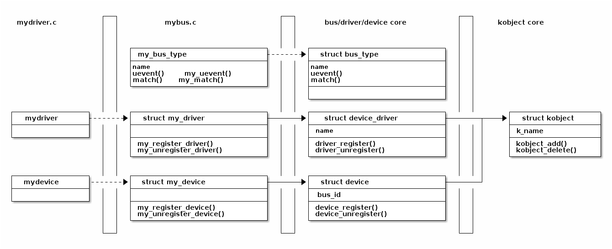

Linux Device Model¶
Overview¶
Plug and Play is a technology that offers support for automatically adding and removing devices to the system. This reduces conflicts with the resources they use by automatically configuring them at system startup. In order to achieve these goals, the following features are required:
- Automatic detection of adding and removing devices in the system (the device and its bus must notify the appropriate driver that a configuration change occurred).
- Resource management (addresses, irq lines, DMA channels, memory areas), including resource allocation to devices and solving conflicts that may arise.
- Devices must allow for software configuration (device resources - ports, interrupts, DMA resources - must allow for driver assignment).
- The drivers required for new devices must be loaded automatically by the operating system when needed.
- When the device and its bus allow, the system should be able to add or remove the device from the system while it is running, without having to reboot the system (hotplug).
For a system to support plug and play, the BIOS, operating system and the device must support this technology. The device must have an ID that will provide to the driver for identification, and the operating system must be able to identify these configuration changes as they appear.
Plug and play devices are: PCI devices (network cards), USB (keyboard, mouse, printer), etc.
Prior to version 2.6, the kernel did not have a unified model to get information about devices. For this reason, a model for Linux devices, Linux Device Model, was developed.
The primary purpose of this model is to maintain internal data structures that reflect the state and structure of the system. Such information includes what devices are in the system, how they are in terms of power management, what bus they are attached to, what drivers they have, along with the structure of the buses, devices, drivers in the system.
To maintain this information, the kernel uses the following entities:
- device - a physical device that is attached to a bus
- driver - a software entity that can be associated with a device and performs operations with it
- bus - a device to which other devices can be attached
- class - a type of device that has a similar behavior; There is a class for disks, partitions, serial ports, etc.
- subsystem - a view on the structure of the system; Kernel subsystems include devices (hierarchical view of all devices in the system), buses (bus view of devices according to how they are attached to buses), classes, etc.
sysfs¶
The kernel provides a representation of its model in userspace through the sysfs virtual file system. It is usually mounted in the /sys directory and contains the following subdirectories:
- block - all block devices available in the system (disks, partitions)
- bus - types of bus to which physical devices are connected (pci, ide, usb)
- class - drivers classes that are available in the system (net, sound, usb)
- devices - the hierarchical structure of devices connected to the system
- firmware - information from system firmware (ACPI)
- fs - information about mounted file systems
- kernel - kernel status information (logged-in users, hotplug)
- module - the list of modules currently loaded
- power - information related to the power management subsystem
As you can see, there is a correlation between the kernel data structures within the described model and the subdirectories in the sysfs virtual file system. Although this likeness may lead to confusion between the two concepts, they are different. The kernel device model can work without the sysfs file system, but the reciprocal is not true.
The sysfs information is found in files that contain an attribute. Some standard attributes (represented by files or directories with the same name) are as follows:
- dev - Major and minor device identifier. It can be used to automatically create entries in the /dev directory
- device - a symbolic link to the directory containing devices; It can be used to discover the hardware devices that provide a particular service (for example, the ethi PCI card)
- driver - a symbolic link to the driver directory (located in /sys/bus/*/drivers )
Other attributes are available, depending on the bus and driver used.

Basic Structures in Linux Devices¶
Linux Device Model provides a number of structures to ensure the interaction between a hardware device and a device driver. The whole model is based on kobject structure. Hierarchies are built using this structure and the following structures are implemented:

- struct bus_type
- struct device
- struct device_driver
The kobject structure¶
A kobject structure does not perform a single function. This structure is usually integrated into a larger one. A kobject structure actually incorporates a set of features that will be offered to a higher abstraction object in the Linux Device Model hierarchy.
For example, the cdev structure has the following definition:
struct cdev {
struct kobject kob;
struct module *owner;
const struct file_operations *ops;
struct list_head list;
dev_t dev;
unsigned int count;
};
Note that this structure includes a kobject structure field.
A kobject structure is defined as follows:
struct kobject {
const char *name;
struct list_head entry;
struct kobject *parent;
struct kset *kset;
struct kobj_type *ktype;
struct sysfs_dirent *sd;
struct kref kref;
unsigned int state_initialized:1;
unsigned int state_in_sysfs:1;
unsigned int state_add_uevent_sent:1;
unsigned int state_remove_uevent_sent:1;
unsigned int uevent_suppress:1;
};
As we can see, the kobject structures are in a hierarchy: an object has a parent and holds a kset member, which contains objects on the same level.
Working with the structure involves initializing it with the
kobject_init() function.
Also in the initialization process it is necessary to set the name of the
kobject structure, which will appear in sysfs, using the
kobject_set_name() function.
Any operation on a kobject is done by incrementing its internal counter using
kobject_get(), or decrementing if it is no longer used using
kobject_put().
Thus, a kobject object will only be released when its internal counter reaches 0.
A method of notifying this is needed so that the resources associated with the
device structure which included the kobject structure are released
(for example, cdev).
The method is called release and is associated with the object via the ktype
field (struct kobj_type).
The kobject structure is the basic structure of the Linux Device Model.
The structures in the higher levels of the model are struct bus_type,
struct device and struct device_driver.
Buses¶
A bus is a communication channel between the processor and an input/output device. To ensure that the model is generic, all input/output devices are connected to the processor via such a bus (even if it can be a virtual one without a physical hardware correspondent).
When adding a system bus, it will appear in the sysfs file system in
/sys/bus.
As with kobjects, buses can be organized into hierarchies and will be represented
in sysfs.
In the Linux Device Model, a bus is represented by the structure
struct bus_type:
struct bus_type {
const char *name;
const char *dev_name;
struct device *dev_root;
struct bus_attribute *bus_attrs;
struct device_attribute *dev_attrs;
struct driver_attribute *drv_attrs;
struct subsys_private *p;
int (*match)(struct device *dev, struct device_driver *drv);
int (*uevent)(struct device *dev, struct kobj_uevent_env *env);
int (*probe)(struct device *dev);
int (*remove)(struct device *dev);
//...
};
It can be noticed that a bus has a name, lists of default attributes, a number
of specific functions, and the driver's private data.
The uevent function (formerly hotplug) is used with hotplug devices.
Bus operations are the registration, the implementation of the operations
described in the struct bus_type structure and the iteration and
inspection of the devices connected to the bus.
A bus is registered using bus_register(), and unregistered using
bus_unregister().
Implementation example:
#include <linux/device.h>
/* mybus.c */
//bus type
struct bus_type my_bus_type = {
.name = "mybus",
.match = my_match,
.uevent = my_uevent,
};
static int __init my_bus_init(void)
{
int err;
//...
err = bus_register(&my_bus_type);
if (err)
return err;
//...
}
static void __exit my_bus_exit(void)
{
//...
bus_unregister(&my_bus_type);
//...
}
The functions that will normally be initialized within a bus_type structure are
match and uevent:
#include <linux/device.h>
#include <linux/string.h>
/* mybus.c */
// match devices to drivers; just do a simple name test
static int my_match(struct device *dev, struct device_driver *driver)
{
return !strncmp(dev_name(dev), driver->name, strlen(driver->name));
}
// respond to hotplug user events; add environment variable DEV_NAME
static int my_uevent(struct device *dev, struct kobj_uevent_env *env)
{
add_uevent_var(env, "DEV_NAME=%s", dev_name(dev));
return 0;
}
The match function is used when a new device or a new driver is added to the
bus. Its role is to make a comparison between the device ID and the driver ID.
The uevent function is called before generating a hotplug in user-space and
has the role of adding environment variables.
Other possible operations on a bus are iterating over the drivers or devices
attached to it.
Although we can not directly access them (lists of drivers and devices
being stored in the private data of the driver, the subsys_private *p field),
these can be iterated using the bus_for_each_dev and
bus_for_each_drv macros.
The Linux Device Model interface allows you to create attributes for the associated objects. These attributes will have a corresponding file in the bus subdirectory in sysfs. The attributes associated with a bus are described by the bus_attribute structure :
struct bus_attribute {
struct attribute attr;
ssize_t (*show)(struct bus_type *, char *buf);
ssize_t (*store)(struct bus_type *, const char *buf, size_t count);
};
Typically, an attribute is defined by the BUS_ATTR macro.
The bus_create_file() and bus_remove_file() functions can be
used to add/delete an attribute within the bus structure.
An example of defining an attribute for my_bus is shown below:
/* mybus.c */
#define MY_BUS_DESCR "SO2 rules forever"
// export a simple bus attribute
static ssize_t my_show_bus_descr(struct bus_type *bus, char *buf)
{
return snprintf(buf, PAGE_SIZE, "%s\n", MY_BUS_DESCR);
}
/*
* define attribute - attribute name is descr;
* full name is bus_attr_descr;
* sysfs entry should be /sys/bus/mybus/descr
*/
BUS_ATTR(descr, 0444, my_show_bus_descr, NULL);
// specify attribute - in module init function
static int __init my_bus_init(void)
{
int err;
//...
err = bus_create_file(&my_bus_type, &bus_attr_descr);
if (err) {
/* handle error */
}
//...
}
static void __exit my_bus_exit(void)
{
//...
bus_remove_file(&my_bus_type, &bus_attr_descr);
//...
}
The bus is represented by both a bus_type object and a device object,
as we will see later (the bus is also a device).
Devices¶
Any device in the system has a struct device structure associated
with it.
Devices are discovered by different kernel methods (hotplug, device drivers,
system initialization) and are registered in the system. Each device present in
the kernel has an entry in /sys/devices.
At the lowest level, a device in Linux Device Model is represented by a
struct device structure:
struct device {
//...
struct device *parent;
struct device_private *p;
struct kobject kobj;
const char *init_name; /* initial name of the device */
//...
struct bus_type *bus; /* type of bus device is on */
struct device_driver *driver; /* which driver has allocated this
device */
//...
void (*release)(struct device *dev);
};
Structure fields include the parent device that is usually a controller, the
associated kobject, the bus it is connected to, the device driver, and a
function called when the device counter reaches 0 (release).
As usual, we have the registration/unregistration functions
device_register() and device_unregister().
To work with attributes, we have structure struct device_attribute,
the macro DEVICE_ATTR for definition, and the functions
device_create_file() and device_remove_file() for adding/removing
the attribute to/from the device.
One important thing to note is that the struct device structure is
usually not used directly, but it is added to another structure. For example:
// my device type
struct my_device {
char *name;
struct my_driver *driver;
struct device dev;
};
Typically, a bus driver will export functions to add or remove such a device, as shown below:
/* mybus.c */
/* BUS DEVICE (parent) */
// parent device release
static void my_bus_device_release(struct device *dev)
{
}
// parent device
static struct device my_bus_device = {
.init_name = "mybus0",
.release = my_bus_device_release
};
/* DEVICE */
/*
* as we are not using the reference count, we use a no-op
* release function
*/
static void my_dev_release(struct device *dev)
{
}
int my_register_device(struct my_device *mydev)
{
mydev->dev.bus = &my_bus_type;
mydev->dev.parent = &my_bus_device;
mydev->dev.release = my_dev_release;
dev_set_name(&mydev->dev, mydev->name);
return device_register(&mydev->dev);
}
void my_unregister_device(struct my_device *mydev)
{
device_unregister(&mydev->dev);
}
/* export register/unregister device functions */
EXPORT_SYMBOL(my_register_device);
EXPORT_SYMBOL(my_unregister_device);
As seen, the functions my_register_device and my_unregister_device, used
to add/remove a device to/from a bus, are defined in the same file where the
bus is defined. Device structures are not initialized; they will be initialized
when the devices are discovered by the system (by hotplug or direct registration
from driver) and the function my_register_device will be called to add a
device to the bus.
To use the bus defined above in the driver implementation, we must define a
structure of type my_device, initialize it and register it using the function
exported by the bus (my_register_device).
/* mydriver.c */
static struct my_device mydev;
char devname[NAME_SIZE];
//...
//register
int err;
sprintf(devname, "mydev0");
mydev.name = devname;
mydev.driver = &mydriver;
dev_set_drvdata(&mydev.dev, &mydev);
err = my_register_device(&mydev);
if (err < 0) {
/*handle error */
}
//..
//unregister
my_unregister_device(&mydev);
Drivers¶
Linux Device Model is used to allow simple association between system devices and drivers. Drivers can export information independent of the physical device.
In sysfs, driver information has no single subdirectory associated; They can be
found in the directory structure in different places: the loaded module is in
/sys/module, in /sys/devices you can find the driver associated with
each device, in /sys/class the drivers belonging to a class, in
/sys/bus the drivers associated to each bus.
A device driver is identified by the structure struct device_driver:
struct device_driver {
const char *name;
struct bus_type *bus;
struct driver_private *p;
struct module *owner;
const char *mod_name; /* used for built-in modules */
int (*probe) (struct device *dev);
int (*remove) (struct device *dev);
void (*shutdown) (struct device *dev);
int (*suspend) (struct device *dev, pm_message_t state);
int (*resume) (struct device *dev);
};
Among the structure fields we find the name of the driver (appears in sysfs),
the bus with which the driver works, and functions called at various times in a
device's operation.
As before, we have the functions driver_register() and
driver_unregister() to register/unregister a driver.
To work with attributes, we have the struct driver_attribute structure,
the macro DRIVER_ATTR for definition, and the functions
driver_create_file() and driver_remove_file() functions for
adding the attribute to the device.
As with devices, the structure struct device_driver is usually
incorporated into another structure specific to a particular bus (PCI, USB, etc.):
/* mybus.c */
// my driver type
struct my_driver {
struct module *module;
struct device_driver driver;
};
#define to_my_driver(drv) container_of(drv, struct my_driver, driver);
int my_register_driver(struct my_driver *driver)
{
int err;
driver->driver.bus = &my_bus_type;
err= driver_register(&driver->driver);
if (err)
return err;
return 0;
}
void my_unregister_driver(struct my_driver *driver)
{
driver_unregister(&driver->driver);
}
/* export register/unregister driver functions */
EXPORT_SYMBOL(my_register_driver);
EXPORT_SYMBOL(my_unregister_driver);
Driver registration/unregistration operations are exported for use in other modules.
As for devices, the operations for drivers are defined when the bus is
initialized and they are exported to be used by drivers. When implementing a
driver that works with devices attached to the bus, we will call the functions
my_register_driver and my_unregister_driver to associate with the bus.
To use the functions (in the driver implementation), we must declare a structure
of type my_driver, initialize it and register using the function exported
by the bus.
/* mydriver.c */
static struct my_driver mydriver = {
.module = THIS_MODULE,
.driver = {
.name = "mydriver",
},
};
//...
//register
int err;
err = my_register_driver(&mydriver);
if (err < 0) {
/*handle error */
}
//..
//unregister
my_unregister_driver(&mydriver);
Classes¶
A class is a high-level view of the Linux Device Model, which abstracts
implementation details. For example, there are drivers for SCSI and ATA
drivers, but all belong to the class of disks. Classes provide a grouping of
devices based on functionality, not how they are connected or how they work.
Classes have a correspondent in /sys/classes.
There are two main structures that describe the classes: struct class
and struct device.
The class structure describes a generic class, while the structure
struct device describes a class associated with a device.
There are functions for initializing/deinitiating and adding attributes for each
of these, described in include/linux/device.h.
The advantage of using classes is that the udev program in userspace, which we
will discuss later, allows the automatic creation of devices in the /dev
directory based on class information.
For this reason, we will continue to present a small set of functions that work with classes to simplify the use of the plug and play mechanism.
A generic class is described by structure class structure:
struct class {
const char *name;
struct module *owner;
struct kobject *dev_kobj;
struct subsys_private *p;
struct class_attribute *class_attrs;
struct class_device_attribute *class_dev_attrs;
struct device_attribute *dev_attrs;
int (*dev_uevent)(struct device *dev, struct kobj_uevent_env *env);
void (*class_release)(struct class *class);
void (*dev_release)(struct device *dev);
//...
};
The class_register() and class_unregister() functions can be
used for initialization/deinitialization.
static struct class my_class = {
.name = "myclass",
};
static int __init my_init(void)
{
int err;
//...
err = class_register(&my_class);
if (err < 0) {
/* handle error */
}
//...
}
static void __exit my_cleanup(void)
{
//...
class_unregister(&my_class);
//...
}
A class associated with a device is described by the struct device
structure.
The device_create() and device_destroy() functions can be used
for initialization/deinitialization.
The device_create() function initializes the device structure,
and assigns the generic class structure and the device received as a
parameter to it;
In addition, it will create an attribute of the class, dev, which contains
the minor and major of the device (minor:major).
Thus, udev utility in usermode can read the necessary data from this attribute
file to create a node in the /dev directory by calling makenod.
An example of initialization:
struct device* my_classdev;
struct cdev cdev;
struct device dev;
//init class for device cdev.dev
my_classdev = device_create(&my_class, NULL, cdev.dev, &dev, "myclass0");
//destroy class for device cdev.dev
device_destroy(&my_class, cdev.dev);
When a new device is discovered, a class and a node will be assigned to it and
a node will be created in the /dev directory.
For the example above, the node /dev/myclass0 will be generated.
Hotplug¶
Hotplug describes the mechanism for adding or removing a device from the
system while it is running without having to reboot the system.
A hotplug event is a notification from the kernel to the user-space when something
changes in the system configuration. These events are generated when creating
or removing a kobject from the kernel. Since these objects are the basis of the
Linux Device Model, being included in all structures (struct bus_type,
struct device, struct device_driver, struct class, etc.), a hotplug event
will be generated when any of these structures is created or removed (uevent).
When a device is discovered in the system, an event is generated. Depending on
the point where it resides in Linux Device Model, the functions corresponding
to the event will be called (usually, the uevent function associated to the
bus or the class). Using these functions, the driver has the ability to set
system variables for the user-space.
The generated event then reaches the user-space. Here is the udev
utility that captures these events. There are configuration files for this
utility in the /etc/udev/ directory. Different rules can be specified to
capture only certain events and perform certain actions, depending on the
system variables set in the kernel or in uevent functions.
An important consequence is that in this way the plug and play mechanism can be
achieved; with the help of udev and the classes (described above), entries
in the /dev/ directories can be automatically created for devices, and using
udev drivers can be automatically loaded for a device.
Rules for udev are located /etc/udev/rules.d.
Any file that ends with .rules in this directory will be parsed when an
event occurs. For more details on how to write rules in these files see
Writing udev rules.
For testing, there are utilities such as udevmonitor, udevinfo and
udevtest.
For a quick example, consider the situation where we want to automatically load a driver for a device when an event occurs. We can create a new file /etc/udev/rules.d/myrules.rules, we will have the following line:
SUBSYSTEM=="pnp", ATTRS{id}=="PNP0400", RUN+="/sbin/insmod /root/mydriver.ko"
This will choose from the events generated only those belonging to the pnp
subsystem (connected to PNP bus) and having an id attribute with the value
PNP0400.
When this rule will be found, the command specified under RUN will be
executed to insert the appropriate driver in the kernel.
Plug and Play¶
As noted above, in Linux Device Model all devices are connected by a bus, even if it has a corresponding physical hardware or it is virtual.
The kernel already has implemented most buses using a bus_type structure
and functions to register/unregister drivers and devices.
To implement a driver, we must first determine the bus to which the supported
devices are connected and use the structures and functions exported by this bus.
The main buses are PCI, USB, PNP, IDE, SCSI, platform,
ACPI, etc.
PNP bus¶
The plug and play mechanism provides a means of detecting and setting the resources for legacy driver that may not be configured or otherwise. All plug and play drivers, protocols, services are based on Plug and Play level. It is responsible for the exchange of information between drivers and protocols. The following protocols are available:
PNPBIOS- used for systems such as serial and parallel portsISAPNP- offers support for the ISA busACPI- offering, among other things, information about system-level devices
The kernel contains a bus, called pnp_bus, that is used for connecting by
many drivers.
The implementation and working with the bus follow the Linux Device Model and
is very similar to what we discussed above.
The main functions and structures exported by the bus, which can be used by drivers, are:
struct pnp_driver- driver type associated to the buspnp_register_driver()- function used to register a PNP driver in the systempnp_unregister_driver()- function used to unregister a PNP driver from the system
As noted in previous sections, the bus has a function called match used to
associate the devices with the appropriate drivers.
For example, when discovering a new device, a driver which meets the condition
given by the match function regarding to the new device. Usually, this
condition is a comparation of IDs (driver id and device id).
A common approach is using a static table in each driver, which holds information
about the devices supported by the driver, which will be used by the bus
when verifying the condition. For example, for a parallel port device we have
the table parport_pc_pnp_tbl:
static const struct pnp_device_id parport_pc_pnp_tbl[] = {
/* Standard LPT Printer Port */
{.id = "PNP0400", .driver_data = 0},
/* ECP Printer Port */
{.id = "PNP0401", .driver_data = 0},
};
MODULE_DEVICE_TABLE(pnp, parport_pc_pnp_tbl);
Each driver declares and initializes a structure pnp_driver, such as
parport_pc_pnp_driver:
static int parport_pc_pnp_probe(struct pnp_dev *dev, const struct pnp_id *card_id,
const struct pnp_id *dev_id);
static void parport_pc_pnp_remove(struct pnp_dev* dev);
static struct pnp_driver parport_pc_pnp_driver = {
.name = "parport_pc",
.id_table = parport_pc_pnp_tbl,
.probe = parport_pc_pnp_probe,
.remove = parport_pc_pnp_remove,
};
We can notice that the structure has as fields a pointer to the table declared above and two functions, which are called when a new device is detected and when it is removed from the system. As all the structures presented above, the driver must be registered to the system:
static int __init parport_pc_init(void)
{
err = pnp_register_driver(&parport_pc_pnp_driver);
if (err < 0) {
/* handle error */
}
}
static void __exit parport_pc_exit(void)
{
pnp_unregister_driver(&parport_pc_pnp_driver);
}
PNP operations¶
So far we have discussed the Linux Device Model and its API. To implement a plug and play driver, we must respect the Linux Device Model model.
Most often, adding a bus in the kernel is not necessary, as most of the existing buses are already implemented (PCI, USB, etc.). Thus, we must first identify the bus to which the device is attached. In the examples below, we will consider that this bus is bus PNP and we will use the structures and functions described above.

Adding a driver¶
In addition to the usual operations, a driver must follow the Linux Device Model.
Thus, it will be registered in the system using the functions provided by
the bus for this purpose.
Usually, the bus provides a particular driver structure containing a
struct device_driver structure, that the driver must initialize and
register using a function *_register_driver.
For example, for the PNP bus, the driver must declare and initialize a
structure of type struct pnp_driver and register it using
pnp_register_drvier:
static struct pnp_driver my_pnp_driver = {
.name = "mydriver",
.id_table = my_pnp_tbl,
.probe = my_pnp_probe,
.remove = my_pnp_remove,
};
static int __init my_init(void)
{
err = pnp_register_driver(&my_pnp_driver);
}
Unlike legacy drivers, plug and play drivers don't register devices at
initialization in the init function (my_init in the example above) using
register_device().
As described above, each bus has a match function which is called when a new
device is detected in the system to determine the associated driver.
Thus, there must be a way for each driver to export information about the
devices it supports, to allow this check to pass and have its functions further
called.
In the examples presented in this lab, the match function does a simple
comparison between the device name and the driver name. Most drivers use a table
containing information devices and store a pointer to this table in the
driver structure.
For example, a driver associated to a PNP bus defines a table of type
struct pnp_device_id and initializes the field id_table from the
structure pnp_driver my_pnp_driver with a pointer to it:
static const struct pnp_device_id my_pnp_tbl[] = {
/* Standard LPT Printer Port */
{.id = "PNP0400", .driver_data = 0},
/* ECP Printer Port */
{.id = "PNP0401", .driver_data = 0},
{ }
};
MODULE_DEVICE_TABLE(pnp,my_pnp_tbl);
static struct pnp_driver my_pnp_driver = {
//...
.id_table = my_pnp_tbl,
//...
};
In the example above, the driver supports multiple parallel port devices,
defined in the table my_pnp_tbl. This information is used by the bus in
the match_device function.
When adding a driver, the bus driver will be associated to it and new entires
in sysfs will be created based on the driver name.
Then the bus match function will be called for every supported device,
to associate the driver with any connected device that it supports.
Removing a driver¶
To remove a driver from the kernel, in addition to operations required for a
legacy driver, we must unregister the device_driver structure.
For a driver associated with the PNP bus, we must unregister the pnp_driver
structure using the pnp_unregister_driver() function:
static struct pnp_driver my_pnp_driver;
static void __exit my_exit(void)
{
pnp_unregister_driver(&my_pnp_driver);
}
Unlike legacy drivers, plug and play drivers don't unregister devices in the
module unload function (my_exit). When a driver is removed, all the
references to it will be removed for all the devices it supports, and entries
from sysfs will also be removed.
Adding a new device¶
As we saw above, plug and play drivers do not register devices at initialization.
This operation will take place in the probe function, which is called when
a new device is detected. A device attached to the PNP bus will be added to
the system by the function probe from the pnp_driver structure:
static int my_pnp_probe(struct pnp_dev *dev, const struct pnp_id *card_id,
const struct pnp_id *dev_id) {
int err, iobase, nr_ports, irq;
//get irq & ports
if (pnp_irq_valid(dev, 0))
irq = pnp_irq(dev, 0);
if (pnp_port_valid(dev, 0)) {
iobase = pnp_port_start(dev, 0);
} else
return -ENODEV;
nr_ports = pnp_port_len(dev, 0);
/* register device dev */
}
static struct pnp_driver my_pnp_driver = {
//...
.probe = my_pnp_probe,
//...
};
Upon detection of a device in the kernel (at boot or by the insertion of the
device through hotplug), an interrupt is generated and reaches the bus
driver.
The device is registered using the function device_register() and it is
attached to the bus. A call to the user space will also be generated, and the
event can be treated by udev. Then, the list of drivers associated with the
bus is iterated and the match function is called for each of them.
The match function tries to find a driver for the new device. After a
suitable driver is found for the device, the probe function of the driver
is called. If the function ends successfully, the device is added to the driver's
list of devices and new entries are created in sysfs based on the device name.
Removing a device¶
As we saw above, the plug and play drivers don't unregister devices when the
driver is unloaded. This operation is done in the remove function, which
is called when a device is removed from the system.
In case of a device attached to the PNP bus, the unregister will be done
in the remove function specified in the pnp_driver structure:
static void my_pnp_remove(struct pnp_dev *dev) {
/* unregister device dev */
}
static struct pnp_driver my_pnp_driver = {
//...
.remove = my_pnp_remove,
};
As seen in the example above, when the removal of a device is detected, the
my_pnp_remove function is called. A user-space call is also generated, which
can be detected by udev, and entries are removed from sysfs.
Exercises¶
Important
To solve exercises, you need to perform these steps:
- prepare skeletons from templates
- build modules
- copy modules to the VM
- start the VM and test the module in the VM.
The current lab name is device_model. See the exercises for the task name.
The skeleton code is generated from full source examples located in
tools/labs/templates. To solve the tasks, start by generating
the skeleton code for a complete lab:
tools/labs $ make clean
tools/labs $ LABS=<lab name> make skels
You can also generate the skeleton for a single task, using
tools/labs $ LABS=<lab name>/<task name> make skels
Once the skeleton drivers are generated, build the source:
tools/labs $ make build
Then, copy the modules and start the VM:
tools/labs $ make copy
tools/labs $ make boot
The modules are placed in /home/root/skels/device_model/<task_name>.
Alternatively, we can copy files via scp, in order to avoid restarting the VM. For additional details about connecting to the VM via the network, please check Connecting to the Virtual Machine.
Review the Exercises section for more detailed information.
Warning
Before starting the exercises or generating the skeletons, please run git pull inside the Linux repo, to make sure you have the latest version of the exercises.
If you have local changes, the pull command will fail. Check for local changes using git status.
If you want to keep them, run git stash before pull and git stash pop after.
To discard the changes, run git reset --hard master.
If you already generated the skeleton before git pull you will need to generate it again.
0. Intro¶
Find the definitions of the following symbols in the Linux kernel:
- functions
dev_name,dev_set_name.- functions
pnp_device_probe,pnp_bus_match,pnp_register_driverand thepnp_bus_typevariable.
1. Bus implementation¶
Analyze the contents of the bex.c, a module that implements a bus
driver. Follow the comments marked with TODO 1 and implement the missing
functionality: register the bus driver and add a new device named root
with type none and version 1.
Hint
See bex_add_dev().
Hint
The register and unregister must be done using bus_register()
and bus_unregister().
Load the module and verify that the bus is visible in /sys/bus. Verify
that the device is visible in /sys/bus/bex/devices.
Remove the module and notice that the sysfs entries are removed.
2. Add type and version device attributes¶
Add two read-only device attributes, type and version. Follow the
TODO 2 markings.
Hint
You will need to add the two attributes in the structure
bex_dev_attrs, as follows:
&dev_attr_<insert-attribute-type-here>.attr,
Hint
A possible implementation for the show function is the following:
static ssize_t
type_show(struct device *dev, struct device_attribute *attr, char *buf)
{
struct bex_device *bex_dev = to_bex_device(dev);
return sprintf(buf, "%s\n", bex_dev->type);
}
DEVICE_ATTR_RO(type);
Observe that two new attributes are visible in /sys/bus/bex/devices/root. Check the contents of these attributes.
3. Add del and add bus attributes¶
Add two write-only bus attributes, del and add. del expects the name
of a device to delete, while add expects the name, type and version to
create a new device. Follow the TODO 3 markings and review
Buses.
Hint
Use sscanf() to parse the input from sysfs and
bex_del_dev() and bex_add_dev() to delete
and create a new device.
An example for the store function is the following:
static ssize_t add_store(struct bus_type *bt, const char *buf, size_t count)
{
char name[32];
int ret;
ret = sscanf(buf, "%31s", name);
if (ret != 1)
return -EINVAL;
...
}
BUS_ATTR(add, S_IWUSR, NULL, add_store);
Hint
The store functions should return 0 if
bex_add_dev/bex_del_dev fail and count otherwise.
Create a new device and observe that is visible in
/sys/bus/devices. Delete it and observe it disapears from sysfs.
Hint
Use echo to write into the bus attributes:
$ echo "name type 1" > /sys/bus/bex/add
$ echo "name" > /sys/bus/bex/del
4. Register the bex misc driver¶
Modify bex-misc.c so that it registers the driver with the bex
bus. Insert the bmx_misc.ko module and create a new bex device from
sysfs with the name "test", type "misc", version 2. Follow the TODO
4 markings.
Observe that the driver is visible in /sys/bus/bex/drivers.
Why isn't the probe function called?
Hint
Notice that the bus match function in bex.c is not implemented.
Implement the bus matching function in bex.c. Follow the TODO 5
markings. Try again to create a new bex device and observe that this
time the probe function from the bex_misc driver is called.
5. Register misc device in the bex_misc probe function¶
Modify bex_misc.c to refuse probing if version > 1. Also, register the
defined misc device in bex_misc_probe and deregister it in
bex_misc_remove. Follow the TODO 6 markings.
Hint
Use misc_register() and misc_deregister().
Create a new device with the name "test", type "misc" and version 2 and observe that the probe fails. Create a new device with the name "test2", type "misc" and version 1 and observe that the probe is successful.
Inspect /sys/bus/bex/devices/test2 and observe that we have a new
entry. Identify the major and minor for the misc device, create a
character device file and try to read and write from the misc device
buffer.
Hint
The major and minor should be visible in the dev attribute of the misc device
6. Monitor uevent notifications¶
Use the udevadm monitor command and observe what happens when:
- the
bex.koandbex_misc.komodules are inserted - a new device with the type "type" is created
- a new device with the type "misc" and version 2 is created
- a new device with the type "misc" and version 1 is created
- all of the above are removed